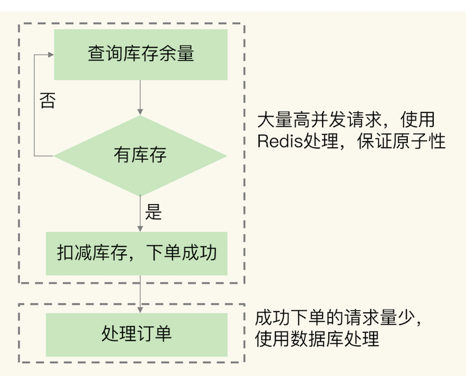

第四节 Redis支撑秒杀场景的关键技术和实践
秒杀场景的业务特点是限时限量，业务系统要处理瞬时的大量高并发请求，而 Redis 就经常被用来支撑秒杀活动。
不过，秒杀场景包含了多个环节，可以分成秒杀前、秒杀中和秒杀后三个阶段，每个阶段的请求处理需求并不相同，Redis 并不能支撑秒杀场景的每一个环节。
1、秒杀场景的负载特征对支撑系统的要求
秒杀活动售卖的商品通常价格非常优惠，会吸引大量用户进行抢购。但是，商品库存量却远远小于购买该商品的用户数，而且会限定用户只能在一定的时间段内购买
1-1 第一个特征是瞬时并发访问量非常高
一般数据库每秒只能支撑千级别的并发请求，而 Redis 的并发处理能力（每秒处理请求数）能达到万级别，甚至更高。
当有大量并发请求涌入秒杀系统时，我们就需要使用 Redis 先拦截大部分请求，避免大量请求直接发送给数据库，把数据库压垮。
1-2 第二个特征是读多写少，而且读操作是简单的查询操作
在秒杀场景下，用户需要先查验商品是否还有库存（也就是根据商品 ID 查询该商品的库存还有多少），只有库存有余量时，秒杀系统才能进行库存扣减和下单操作。
库存查验操作是典型的键值对查询，而 Redis 对键值对查询的高效支持，正好和这个操作的要求相匹配。
不过，秒杀活动中只有少部分用户能成功下单，所以，商品库存查询操作（读操作）要远多于库存扣减和下单操作（写操作）。
2、Redis 可以在秒杀场景的哪些环节发挥作用？
2-1 第一阶段：秒杀活动前
在这个阶段，用户会不断刷新商品详情页，这会导致详情页的瞬时请求量剧增。
这个阶段的应对方案，一般是尽量把商品详情页的页面元素静态化，然后使用 CDN 或是浏览器把这些静态化的元素缓存起来。这样一来，秒杀前的大量请求可以直接由 CDN 或是浏览器缓存服务，不会到达服务器端了，这就减轻了服务器端的压力。
在这个阶段，有 CDN 和浏览器缓存服务请求就足够了，还不需要使用 Redis
2-2 第二阶段：秒杀活动开始
此时，大量用户点击商品详情页上的秒杀按钮，会产生大量的并发请求查询库存。
一旦某个请求查询到有库存，紧接着系统就会进行库存扣减。然后，系统会生成实际订单，并进行后续处理，例如订单支付和物流服务。如果请求查不到库存，就会返回。用户通常会继续点击秒杀按钮，继续查询库存。
这个阶段的操作就是三个：库存查验、库存扣减和订单处理。因为每个秒杀请求都会查询库存，而请求只有查到有库存余量后，后续的库存扣减和订单处理才会被执行。所以，这个阶段中最大的并发压力都在库存查验操作上。
那么，库存扣减和订单处理是否都可以交给后端的数据库来执行呢?
其实，订单处理可以在数据库中执行，但库存扣减操作，不能交给后端数据库处理。
在数据库中处理订单的原因比较简单
订单处理会涉及支付、商品出库、物流等多个关联操作，这些操作本身涉及数据库中的多张数据表，要保证处理的事务性，需要在数据库中完成。而且，订单处理时的请求压力已经不大了，数据库可以支撑这些订单处理请求。
那为啥库存扣减操作不能在数据库执行呢？这是因为，一旦请求查到有库存，就意味着发送该请求的用户获得了商品的购买资格，用户就会下单了。同时，商品的库存余量也需要减少一个。如果我们把库存扣减的操作放到数据库执行，会带来两个问题。
- 额外的开销。Redis 中保存了库存量，而库存量的最新值又是数据库在维护，所以数据库更新后，还需要和 Redis 进行同步，这个过程增加了额外的操作逻辑，也带来了额外的开销。
- 下单量超过实际库存量，出现超售。由于数据库的处理速度较慢，不能及时更新库存余量，这就会导致大量库存查验的请求读取到旧的库存值，并进行下单。此时，就会出现下单数量大于实际的库存量，导致出现超售，这就不符合业务层的要求了。
所以，就需要直接在 Redis 中进行库存扣减。
具体的操作是，当库存查验完成后，一旦库存有余量，我们就立即在 Redis 中扣减库存。而且，为了避免请求查询到旧的库存值，库存查验和库存扣减这两个操作需要保证原子性。
2-3 第三阶段:秒杀活动结束后
在这个阶段，可能还会有部分用户刷新商品详情页，尝试等待有其他用户退单。而已经成功下单的用户会刷新订单详情，跟踪订单的进展。不过，这个阶段中的用户请求量已经下降很多了，服务器端一般都能支撑。
2-4 秒杀场景对 Redis 的需求
秒杀场景分成秒杀前、秒杀中和秒杀后三个阶段。
- 秒杀开始前后，高并发压力没有那么大，不需要使用 Redis，
- 但在秒杀进行中，需要查验和扣减商品库存，库存查验面临大量的高并发请求，而库存扣减又需要和库存查验一起执行，以保证原子性。这就是秒杀对 Redis 的需求。

3、Redis 的哪些方法可以支撑秒杀场景？
3-1 秒杀场景对 Redis 操作的根本要求
- 支持高并发。这个很简单，Redis 本身高速处理请求的特性就可以支持高并发。而且，如果有多个秒杀商品，我们也可以使用切片集群，用不同的实例保存不同商品的库存，这样就避免，使用单个实例导致所有的秒杀请求都集中在一个实例上的问题了。不过，需要注意的是，当使用切片集群时，我们要先用 CRC 算法计算不同秒杀商品 key 对应的 Slot，然后，我们在分配 Slot 和实例对应关系时，才能把不同秒杀商品对应的 Slot 分配到不同实例上保存。
- 保证库存查验和库存扣减原子性执行。针对这条要求，我们就可以使用 Redis 的原子操作或是分布式锁这两个功能特性来支撑了。
Redis 是如何基于原子操作来支撑秒杀场景的。
3-2 基于原子操作支撑秒杀场景
在秒杀场景中，一个商品的库存对应了两个信息，分别是总库存量和已秒杀量。这种数据模型正好是一个 key（商品 ID）对应了两个属性（总库存量和已秒杀量），所以，我们可以使用一个 Hash 类型的键值对来保存库存的这两个信息，如下所示：
key: itemID
value: {total: N, ordered: M}
其中，itemID 是商品的编号，total 是总库存量，ordered 是已秒杀量。
因为库存查验和库存扣减这两个操作要保证一起执行，一个直接的方法就是使用 Redis 的原子操作。
因为库存查验和库存扣减这两个操作要保证一起执行，一个直接的方法就是使用 Redis 的原子操作。
Redis应对并发访问：无锁的原子操作学习过，原子操作可以是 Redis 自身提供的原子命令，也可以是 Lua 脚本。因为库存查验和库存扣减是两个操作，无法用一条命令来完成，所以，就需要使用 Lua 脚本原子性地执行这两个操作。
Lua 脚本写的伪代码，它显示了这两个操作的实现。
#获取商品库存信息
local counts = redis.call("HMGET", KEYS[1], "total", "ordered");
#将总库存转换为数值
local total = tonumber(counts[1])
#将已被秒杀的库存转换为数值
local ordered = tonumber(counts[2])
#如果当前请求的库存量加上已被秒杀的库存量仍然小于总库存量，就可以更新库存
if ordered + k <= total then
#更新已秒杀的库存量
redis.call("HINCRBY",KEYS[1],"ordered",k) return k;
end
return 0
有了 Lua 脚本后，我们就可以在 Redis 客户端，使用 EVAL 命令来执行这个脚本了。
最后，客户端会根据脚本的返回值，来确定秒杀是成功还是失败了。如果返回值是 k，就是成功了；如果是 0，就是失败。
其实，要想保证库存查验和扣减这两个操作的原子性，还有另一种方法，就是使用分布式锁来保证多个客户端能互斥执行这两个操作。
3-3 基于分布式锁来支撑秒杀场景
使用分布式锁来支撑秒杀场景的具体做法是，先让客户端向 Redis 申请分布式锁，只有拿到锁的客户端才能执行库存查验和库存扣减。这样一来，大量的秒杀请求就会在争夺分布式锁时被过滤掉。而且，库存查验和扣减也不用使用原子操作了，因为多个并发客户端只有一个客户端能够拿到锁，已经保证了客户端并发访问的互斥性。
伪代码，它显示了使用分布式锁来执行库存查验和扣减的过程
//使用商品ID作为key
key = itemID
//使用客户端唯一标识作为value
val = clientUniqueID
//申请分布式锁，Timeout是超时时间
lock =acquireLock(key, val, Timeout)
//当拿到锁后，才能进行库存查验和扣减
if(lock == True) {
//库存查验和扣减
availStock = DECR(key, k)
//库存已经扣减完了，释放锁，返回秒杀失败
if (availStock < 0) {
releaseLock(key, val)
return error
}
//库存扣减成功，释放锁
else{
releaseLock(key, val)
//订单处理
}
}
//没有拿到锁，直接返回
else
return
在使用分布式锁时，客户端需要先向 Redis 请求锁，只有请求到了锁，才能进行库存查验等操作，这样一来，客户端在争抢分布式锁时，大部分秒杀请求本身就会因为抢不到锁而被拦截。
我们可以使用切片集群中的不同实例来分别保存分布式锁和商品库存信息。
使用这种保存方式后，秒杀请求会首先访问保存分布式锁的实例。如果客户端没有拿到锁，这些客户端就不会查询商品库存，这就可以减轻保存库存信息的实例的压力了。
4、本节小结
秒杀场景有 2 个负载特征，分别是瞬时高并发请求和读多写少。Redis 良好的高并发处理能力，以及高效的键值对读写特性，正好可以满足秒杀场景的需求。
在秒杀场景中，我们可以通过前端 CDN 和浏览器缓存拦截大量秒杀前的请求。在实际秒杀活动进行时，库存查验和库存扣减是承受巨大并发请求压力的两个操作，同时，这两个操作的执行需要保证原子性。Redis 的原子操作、分布式锁这两个功能特性可以有效地来支撑秒杀场景的需求。
当然，对于秒杀场景来说，只用 Redis 是不够的。秒杀系统是一个系统性工程，Redis 实现了对库存查验和扣减这个环节的支撑，除此之外，还有 4 个环节需要我们处理好。
- 前端静态页面的设计。秒杀页面上能静态化处理的页面元素，我们都要尽量静态化，这样可以充分利用 CDN 或浏览器缓存服务秒杀开始前的请求。
- 请求拦截和流控。在秒杀系统的接入层，对恶意请求进行拦截，避免对系统的恶意攻击，例如使用黑名单禁止恶意 IP 进行访问。如果 Redis 实例的访问压力过大，为了避免实例崩溃，我们也需要在接入层进行限流，控制进入秒杀系统的请求数量。
- 库存信息过期时间处理。Redis 中保存的库存信息其实是数据库的缓存，为了避免缓存击穿问题，我们不要给库存信息设置过期时间。
- 数据库订单异常处理。如果数据库没能成功处理订单，可以增加订单重试功能，保证订单最终能被成功处理。
建议：秒杀活动带来的请求流量巨大，我们需要把秒杀商品的库存信息用单独的实例保存，而不要和日常业务系统的数据保存在同一个实例上，这样可以避免干扰业务系统的正常运行。